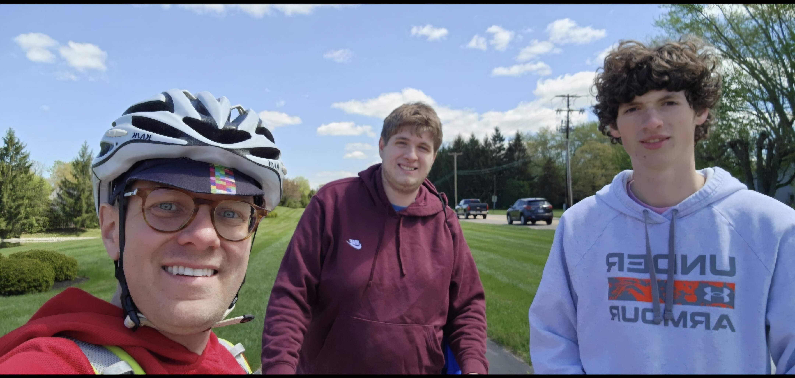
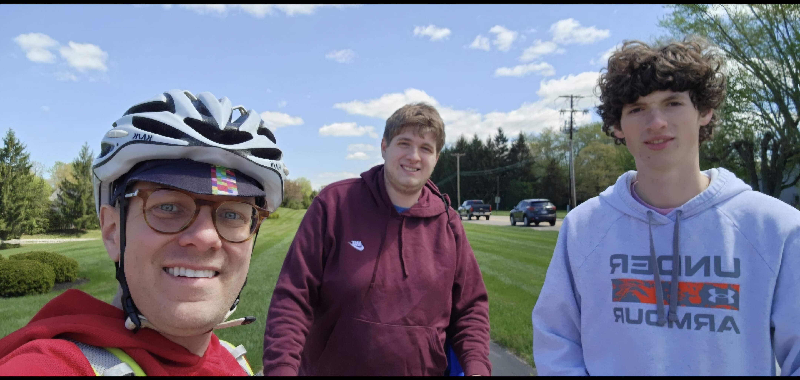

Outside of my passion for technology, I’m an active runner on my school’s varsity cross country and track teams. Running has been a giant part of my life. It helps me stay focused and disciplined, pushing myself to reach new goals. I was awarded the most improved award from cross-country.
One of my proudest moments was being awarded the Most Improved Award in cross-country. This recognition was a testament to the hard work and dedication I put into my training. It wasn’t just about the physical improvement, but also the mental resilience and perseverance I developed along the way. Running has taught me valuable life lessons about commitment, goal-setting, and the importance of a positive mindset.
Whether it’s an early morning run or a challenging race, I embrace every opportunity to push my limits and grow as an athlete. Running is more than just a sport to me; it’s a passion that fuels my drive and ambition in all areas of my life.
One of my favorite quotes I like to use when I'm running is
"If it doesn't challenge you, it doesn't change you." – Fred DeVito
 
